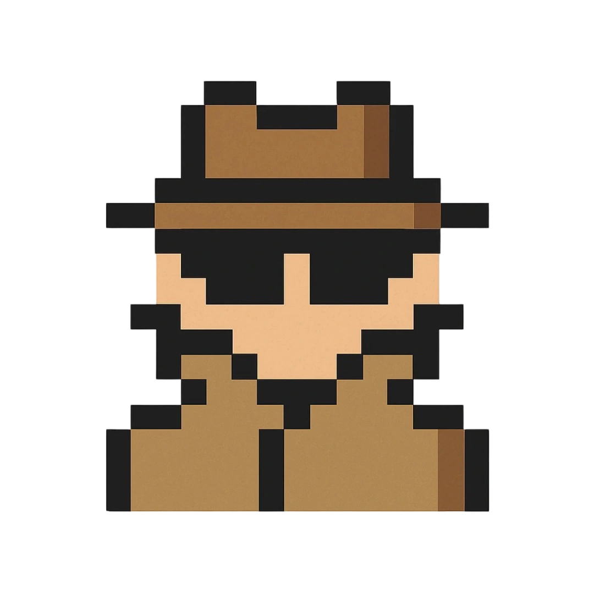

🕵️♂️
你
Year
1931
瀋陽事變
Inventory
背包是空的
調查
WASD 移動 | 空白鍵 / Enter 互動
標題
...
📝 歷史重點：
關閉
調查筆記
暫無記錄
獲得物品！
機密檔案：
1931
...
歷史背景 BACKGROUND
...
當前任務 MISSION
...
接受任務
抗戰勝利與影響
🌏 國際地位
戰後，中國國際地位提升，成為
聯合國創始會員國
，並擔任安理會五大常任理事國之一。
📜 廢除條約
各國廢除以往簽訂之不平等條約，收回租界與治外法權。
🗺️ 收復失地
日本歸還東北三省，
台灣及澎湖列島
重回中國版圖。
重新開始歷史旅程